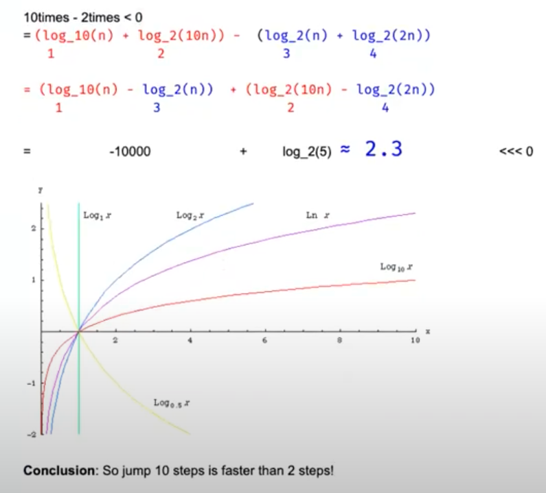

Binary search
Binary Search¶
2 Principles: 1. Guarantee that the search space decreases over time (after each iteration). // prevent while "true" 2. Guarantee that the target (if exist) cannot be ruled out accidentally, when we change the value of Left or Right.
while (l <= r): 1 element can get in while (l < r): 1 element cannot get in
l = l + 1: eleminate l for next iteration l = l: check if 1 element will cause inf
Classic Binary Search¶
int binarySearch(vector<int>& a, int target) {
int left = 0, right = a.size() - 1;
while (left <= right) { // <=
int mid = left + right >> 1;
if (a[mid] == target) return mid;
else if (a[mid] < target) left = mid + 1;
else right = mid - 1;
}
return -1;
}
2D Space Binary Search¶
1 3 4 6 7 9 10 11 14 17 19 20 target = 11
index = col * row - 1 col = index / size of col row = index % size of col
int l = 0, r = col * row - 1;
while (l <= r) {
int m = (l + r) >> 1;
int x = m / col, y = m % col;
if (a[x][y] == target) return true;
else if (a[x][y] < target) l = m + 1;
else r = m - 1;
}
return false;
Closest Element to Target¶
target == 4 [1,2,3,8,9] -> return 3's index which is 2
while (l < r - 1) { // only two (or one) element left [l, l+1] or [l]
int m = l + (r - l) / 2;
if (a[m] == target) {
return m;
} else if (a[m] < target) {
l = m;
} else {
r = m;
}
}
if (target - a[l] < a[r] - target) // return the one that is close to target, because there are two elements
return l;
else
return r;
First target¶
target = 5 [4,5,5,5,5,5] -> return 1 (first occurance of 5 index)
while (l < r - 1) { // only two (or one) element left [l, l+1] or [l]
int m = l + (r - l) / 2;
if (a[m] == target) {
r = m; // r = m - 1 -> wrong
} else if (a[m] < target) {
l = m; // l = m + 1 -> right
} else {
r = m; // r = m - 1 -> right
}
}
if (target == a[l]) // return the left that is equal to target, because it goes from left to right
return l;
if (target == a[r])
return r;
else
return -1;
Last target (variant for previous one)¶
target = 5 [4,5,5,5,5,5] -> return 1 (first occurance of 5 index)
while (l < r - 1) { // only two (or one) element left [l, l+1] or [l]
int m = l + (r - l) / 2;
if (a[m] == target) {
l = m; // now change to l
} else if (a[m] < target) {
l = m;
} else {
r = m;
}
}
if (target == a[r]) // return the right that is equal to target, because it goes from right to left
return l;
if (target == a[l])
return r;
else
return -1;
Closest k Elements¶
how to return the index of k elements that are closest elements to the target k = 3, target = 5, a = [1,2,3,8,9] return 2,3,8
Solution 1: 1. run binary search to find L and R, where L is the largest value that is smaller than target 2. if l is close to target, l--; else r++ Complexity: O(log(n) + k), what if k \approx n? Complexity will be O(n)
int largestSmallerEqual(vector<int> arr, int target) {
int left = 0, right = arr.size() - 1;
while (left < right - 1) {
int mid = left + right >> 1;
if (arr[mid] <= target) {
left = mid;
} else {
right = mid;
}
}
if (arr[right] <= target) return right;
if (arr[left] <= target) return left;
return -1;
}
vector<int> kClosest(vector<int> arr, int target, int k) {
int left = largestSmallerEqual(arr, target);
int right = left + 1;
vector<int> res(k);
for (int i = 0; i < k; ++i) {
if (right >= arr.size() || left >= 0 && target - arr[left] <= arr[right] - target) {
res[i] = arr[left--];
} else {
res[i] = arr[right++];
}
}
return res;
}
Solution 2: 1. binary search to find L and R 2. using offset to form two more arrays: leftArray = {3 2 1} rightArray = {4 5} then use the method introduced later to find the median. Don't need to preprocess the offset beforehand, but just to update when visited.
Solution 3: Moving the sliding window to get the least sum diff. To get the minimal, it has to be the mid point of the sliding window. case 1: x - A[mid] < A[mid + k] - x, need to move window go left -------x----A[mid]-----------------A[mid + k]----------
case 2: x - A[mid] < A[mid + k] - x, need to move window go left again -------A[mid]----x-----------------A[mid + k]----------
case 3: x - A[mid] > A[mid + k] - x, need to move window go right -------A[mid]------------------x---A[mid + k]----------
case 4: x - A[mid] > A[mid + k] - x, need to move window go right -------A[mid]---------------------A[mid + k]----x------
vector<int> kClosest(vector<int> a, int x, int k) {
int n = a.size();
int l = 0, r = n - k;
while (l < r) {
int m = (l + 0ll + r) >> 1;
if (x - a[m] > a[m + k] - x)
l = m + 1;
else
r = m;
}
auto res = vector<int>(a.begin() + l, a.begin() + l + k );
// this sort is unecessary if there is no requirement for what order to be returned
// sort(res.begin(), res.end(), [&](const int l, const int r) {
// return abs(l - x) < abs(r - x);
// });
return res;
}
Smallest element that is greater than target¶
sss eee bbb -> same as first target, because we want to find the first b
case 1: if input[m] < target: l = m + 1 // l = m also work case 2: if input[m] == target: l = m + 1 // l = m also work case 3: if input[m] > target: r = m // r = m - 1 is wrong, becasue it will wipe out the first b
while (l < r - 1) { // only two (or one) element left [l, l+1] or [l]
int m = l + (r - l) / 2;
if (a[m] > target) {
r = m;
} else if (a[m] <= target) { // or just else
l = m;
}
}
if (a[l] > target)
return l;
if (a[r] < target)
return r;
return -1;
Kth smallest in two sorted arrays¶
- how to find the median
- how to find k-th smallest element from them
A[] = {2,5,7,10,13} B[] = {1,3,4,13,20,29} k = 5 output = 5
solution 1: two pointer, i++ if a[i] < b[j] else j++, stop until k steps -> O(k)
solution 2: binary search
Binary Search with Unknown Size¶
dict = {1 3 5 6 .... 1000000}, target = 9999 Assumption: - No dict.size() - if dict.get(index) == null, then we know the size of dict is < index.
solution 1: 1. keep jumping out with size = size * 2. until dict.get(index) == null 2. do binary search from 0 to current size
Followup: Why not size = size * 10? Which one is better?
Don't say an answer (if you don't know yet), but say let's analyze together.

